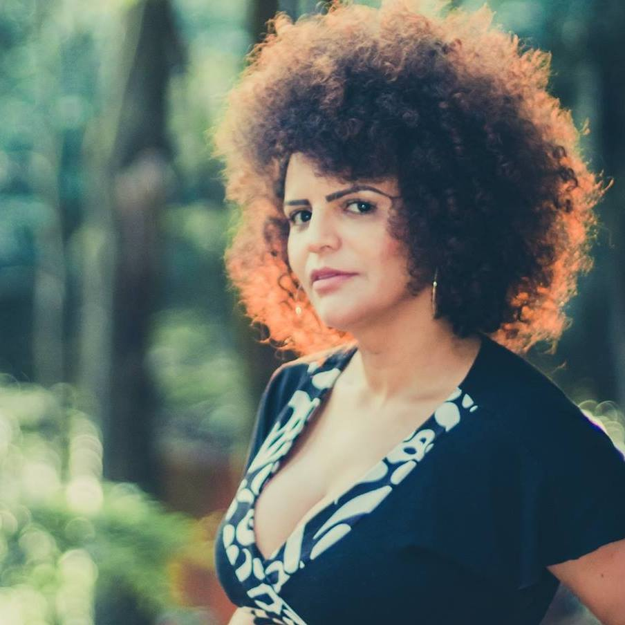

Funções / Preparação de elenco
As informações de cada perfil são de responsabilidade das profissionais.
Você quer conhecer profissionais de quais estados?
Marcar/Desmarcar todos
CARREGANDO ...
Izabel Neiva (SP)
Izabel Neiva
40 anos | Guarulhos (SP)
izabel_neiva@hotmail.com
Sou Bacharel em Artes Cênicas pela Escola Celia Helena, licenciada em artes com habilitação em teatro pela Faculdade Paulista de Artes, MBA pós graduada em cinema pela Lafilm Institute, técnica em atuação e direção pelo Inst Stanilavisk. Trabalhos: Assist Direção Longa metragem Off Line, Direção/Produção e atuação curta A Utima Chance, Direção e Produção Curta O Menino da moeda (proj em fase de captação). Dezenas de curtas como atriz, no teatro trabalhei com os diretores: Marco Antônio Brás, Claudia Schapira, Bete Dorgam, Simone Boer.
Outras atividades de Izabel Neiva
Assistência de Direção |
Atuação |
Continuidade |
Direção |
Produção |
Roteiro
Amostra de vídeo
 Nadia Bambirra (RJ)
Nadia Bambirra (RJ)
Nadia Bambirra
51 anos | Rio de Janeiro (RJ)
nadiabambirra@hotmail.com
Diretora, atriz, produtora e treinadora de atores. Atualmente dando aula de interpretacao para camera, na escola Wolf Maya e ensaiando o proximo espetaculo.
http://curtaviver.blogspot.com
Outras atividades de Nadia Bambirra
Atuação |
Direção |
Produção
Amostra de vídeo
 Natalie Matos (MG)
Natalie Matos (MG)
Natalie Matos
21 anos | Belo Horizonte (MG)
natalie.m.moura@gmail.com
A única certeza que mora em mim é a de que a cada passo aprendo algo novo e construo minha identidade. Como uma árvore que cresce regada ao amor e às dificuldades, dá bons frutos e flores, mas também amadurece antes da hora e às vezes até mesmo cai, mas, sempre lembra que tudo que se vive fortalece suas raízes. E sempre quando eu precisar vou ao meu interior e discuto comigo, para entender esse meu eu que às vezes recusa falar e prefere apenas sentir. Gradua em Cinema e Audiovisual e Técnico em Artes Visuais, hoje tenho projetos de visibilidade ao protagonismo da mulher preta e a juventude periférica.
http://nataliem-moura.wixsite.com/nataliematos
Outras atividades de Natalie Matos
Animação |
Assistência de Direção |
Captação de Recursos |
Captação de Som |
Cenografia |
Continuidade |
Correção de cor |
Direção |
Direção de Arte |
Direção de Fotografia |
Edição |
Fotografia Still |
Iluminação |
Mixagem e efeitos sonoros |
Pesquisa e desenvolvimento |
Produção |
Roteiro
Amostra de vídeo
 Priscila Oliveira (SP)
Priscila Oliveira (SP)
Priscila Oliveira
28 anos | Valinhos (SP)
priscifch@gmail.com
Sou formada em Ciências Sociais e Midialogia, pesquiso direção de criança para cinema no curso Mestrado em Artes da Cena. Minha formação e experiências estão voltadas para roteiro e direção, mas gosto de ampliar meus conhecimentos teóricos e práticos em outras áreas do audiovisual. Também tenho interesse em trabalhos que envolvam o negro e a mulher no cinema (na frente e atrás da câmera), principalmente em relação à construção de personagens.